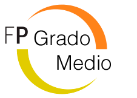

GRADO MEDIO

Los ciclos formativos de grado medio (CFGM) son estudios profesionalizadores que te permiten adquirir las competencias técnicas necesarias para el desarrollo efectivo de una profesión.
La titulación obtenida es la de Técnico o Técnica de la profesión correspondiente al ciclo cursado. Dicha titulación permite el acceso al mundo laboral, a otros ciclos formativos de grado medio,
al Bachillerato o a los ciclos formativos de grado superior, siempre que cumplas con los requisitos establecidos en cada caso.
Vías de acceso al Ciclo Formativo de Grado Medio
-
Con titulación académica
- Haber superado la ESO, o equivalente a efectos académicos.
- Estar en posesión de un título de FP Básica.
- Estar en posesión de un título de Técnico o Técnico Auxiliar, o equivalente a efectos académicos.
- Haber superado el segundo curso del Bachillerato Unificado y Polivalente (BUP).
-
Sin titulación académica
- Haber superado el curso de formación específico para el acceso a ciclos de grado medio en centros públicos o privados autorizados por la Administración educativa.
- Haber superado la prueba de acceso a ciclos formativos de grado medio. Esta se convoca anualmente y deberás tener 17 años como mínimo, o cumplirlos en el mismo año que se realiza la prueba, para poder presentarte.
La prueba tiene por objeto comprobar la madurez del aspirante en relación con los objetivos de la Educación Secundaria Obligatoria.
- Haber superado la prueba de acceso a la Universidad para mayores de 25 años.
Pruebas de acceso Grado Medio
La prueba de acceso a los ciclos formativos de grado medio (CFGM) son los exámenes que deben superar todas aquellas personas que desean cursar estos estudios y no cumplen con los requisitos de acceso.
Para acceder a los CFGM debes estar en posesión del título de Educación Secundaria Obligatoria (ESO) o su equivalente a efectos académicos. También pueden acceder aquellas personas que hayan obtenido un título de FP Básica.
Si no cumples con estos requisitos, una de las formas de acceder es superando un examen de acceso específico.
Requisitos
- Tener como mínimo 17 años o cumplirlos en el año de realización de esta.
- No estar en posesión del título de la ESO o equivalente.
Estructura de la prueba
Esta prueba es común para todos los ciclos formativos y hace referencia al currículum de la Educación Secundaria Obligatoria.
Los contenidos de la prueba se corresponden a tres ámbitos:
-
Ámbito de comunicación:
- Lengua Castellana y Literatura
- Lengua Extranjera (inglés o francés)
- Lengua oficial de las comunidades autónomas
-
Ámbito social
- Ciencias Sociales
- Geografía e Historia
-
Ámbito científico-tecnológico
- Matemáticas orientadas a las enseñanzas aplicadas
- Física y Química
- Biología y Geología
Cada comunidad autónoma organiza y regula la prueba, por lo que puede haber diferencias entre los contenidos de los que se debe examinar el alumnado dependiendo de la comunidad en la que se presente.